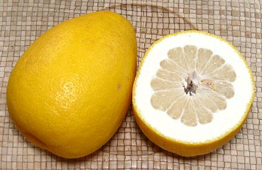

Native to Southeast Asia, the Pomelo is now grown in tropical and subtropical areas all over Asia and the Pacific Islands, as well as in California and Florida. The flesh may be pale yellow to red depending on variety. Pale yellow dominates in Southern California, but pink is sometimes seen.
Pomelo tastes like a very mild sweet grapefruit. The rind tends to be very thick, and both the rind and membrane tend to vary in bitterness from almost none to distinctly bitter. It is a large fruit. The larger photo specimen was 5-1/2 inches diameter, 4-3/4 inches high and weighed 2 pounds, but they can be over 9 inches diameter and nearly 4-1/2 pounds.
 The specimen to the left was sold as "Chinese Pomelo". It differes little from other pale yellow pomelos except for elongated shape, smaller size, thicker rind, and unusually firm flesh. Membranes and rind were quite mildly bitter, but the rind is very thick, so yield would not be as good as from the ones common here. The spcimens were purchased from a large Asian market in Los Angeles (San Gabriel) for 2019 US $2.99 each, they were typically 5-1/2 inches long, 4-1/8 inches diameter and weighed 1 pound 2 ounces.
Pomelo is most eaten raw, plain or in fruit salads of various composition. Pomelo rind is considered very good for candying and is sometimes made into marmalade, if they are sufficiently bitter.
Buying: Pomelo are very common here in Southern California, appearing in Asian and multi-ethnic markets, and in many big chain supermarkets. They are also grown in Florida. The photo specimens were purchased from a multi-ethnic market in Los Angeles (San Gabriel) for 2018 US $0.79 / pound, but I have seen them at much higher prices.
Storing: Handle the same as grapefruit.
Yield: A 1 pound 14 ounce fruit yielded 15.25 ounces edible fruit and juice (51%).
Health & Nutrition Like other citrus fruits Pomelo is very high in vitamin C, and has much lower amounts of B vitamins and minerals. Caution: Pomelo can have adverse effects in combination with some drugs. Those drugs usually warn against Grapefruit.
ci_pomeloz 180120 - www.clovegarden.com